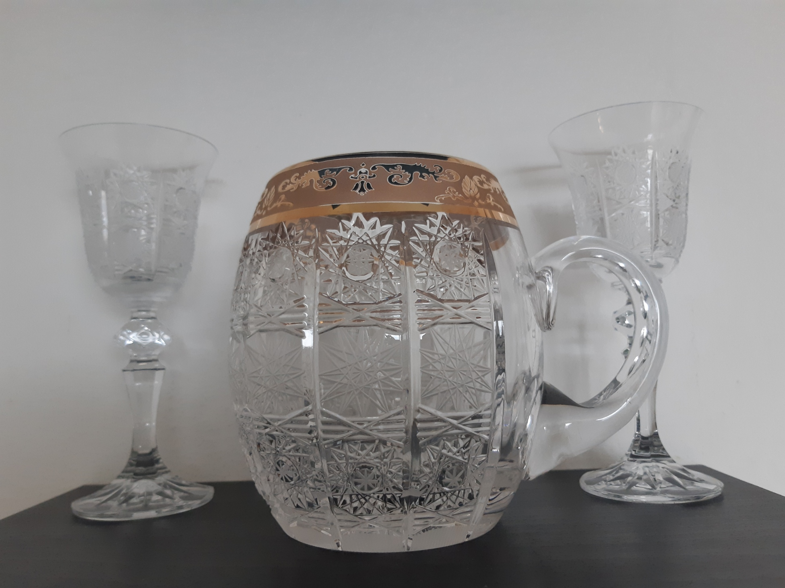
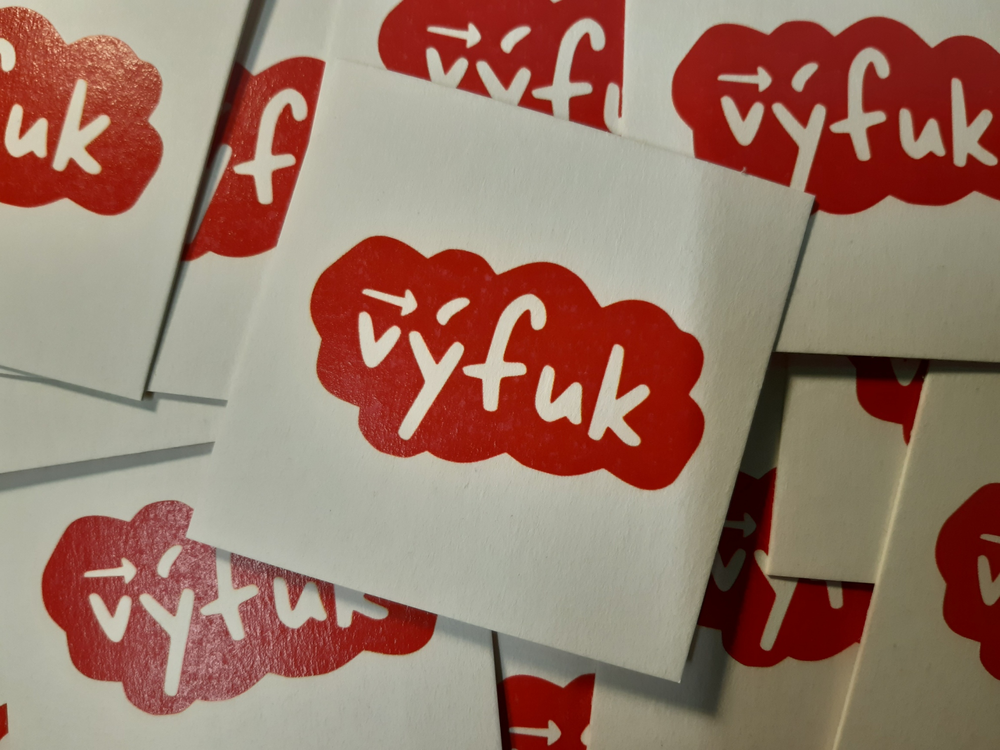

Vítejte na stránkách hospody U Výfuku! Stránka je momentálně ve výstavbě.
Aktuálně se vyměňuje vzduch, pivo se nečepuje.
Anketa jaké pivo koupit příště.
Aktuálně není v plánu žádná kalba.
Zlatý krýgl je soutěž o štamgasta týdne. Zlatý krýgl se propůjčuje vždy na týden štamgastovi, který toho za předchozí týden vypil nejvíc (počítá se pivo - 2 body, limonáda - 2 body i panáky - 1 bod).
Aktuálně je držitelem zlatého krýglu Viktor.
Seznam historických držitelů zlatého krýglu.
V podstatě kdykoliv. Při nejhorším vám nikdo neotevře. Ideální je pondělí, úterý nebo středa večer.
Máme vlastní podtácky! Rozdáváme je zadarmo, ale pokud chcete, můžete jejich koupí podpořit rozvoj naší hospody :).
